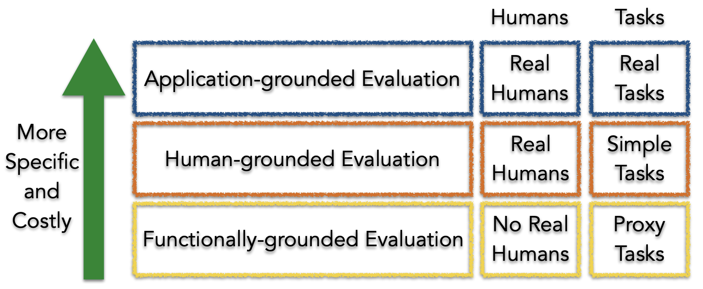
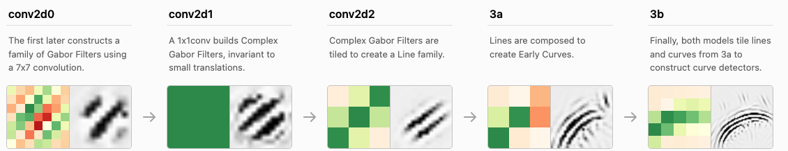
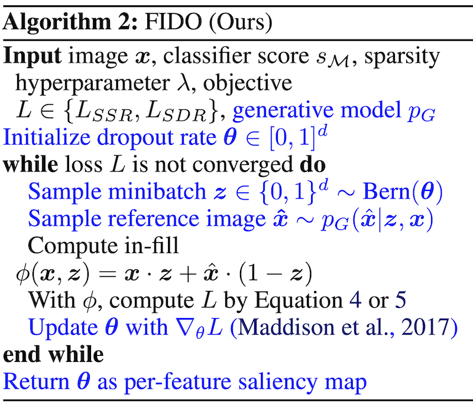

interpretability
Contents
some interesting papers on interpretable machine learning, largely organized based on this interpretable ml review (murdoch et al. 2019) and notes from this interpretable ml book (molnar 2019).
1.13. interpretability#

1.13.1. reviews#
1.13.1.1. definitions#
The definition of interpretability I find most useful is that given in murdoch et al. 2019: basically that interpretability requires a pragmatic approach in order to be useful. As such, interpretability is only defined with respect to a specific audience + problem and an interpretation should be evaluated in terms of how well it benefits a specific context. It has been defined and studied more broadly in a variety of works:
Explore, Explain and Examine Predictive Models (biecek & burzykowski, in progress) - another book on exploratory analysis with interpretability
Explanation Methods in Deep Learning: Users, Values, Concerns and Challenges (ras et al. 2018)
Explainable Deep Learning: A Field Guide for the Uninitiated
Explainable AI: A Brief Survey on History, Research Areas, Approaches and Challenges
Against Interpretability: a Critical Examination of the Interpretability Problem in Machine Learning - “where possible, discussion should be reformulated in terms of the ends of interpretability”
1.13.1.2. overviews#
Towards a Generic Framework for Black-box Explanation Methods (henin & metayer 2019)
sampling - selection of inputs to submit to the system to be explained
generation - analysis of links between selected inputs and corresponding outputs to generate explanations
proxy - approximates model (ex. rule list, linear model)
explanation generation - explains the proxy (ex. just give most important 2 features in rule list proxy, ex. LIME gives coefficients of linear model, Shap: sums of elements)
interaction (with the user)
this is a super useful way to think about explanations (especially local), but doesn’t work for SHAP / CD which are more about how much a variable contributes rather than a local approximation


feature (variable) importance measurement review (VIM) (wei et al. 2015)
often-termed sensitivity, contribution, or impact
some of these can be applied to data directly w/out model (e.g. correlation coefficient, rank correlation coefficient, moment-independent VIMs)

Pitfalls to Avoid when Interpreting Machine Learning Models (molnar et al. 2020)
Feature Removal Is a Unifying Principle for Model Explanation Methods (covert, lundberg, & lee 2020)
Interpretable Machine Learning: Fundamental Principles and 10 Grand Challenges (rudin et al. ‘21)
1.13.2. evaluating interpretability#
Evaluating interpretability can be very difficult (largely because it rarely makes sense to talk about interpretability outside of a specific context). The best possible evaluation of interpretability requires benchmarking it with respect to the relevant audience in a context. For example, if an interpretation claims to help understand radiology models, it should be tested based on how well it helps radiologists when actually making diagnoses. The papers here try to find more generic alternative ways to evaluate interp methods (or just define desiderata to do so).
Towards A Rigorous Science of Interpretable Machine Learning (doshi-velez & kim 2017)

Interpreting Interpretability: Understanding Data Scientists’ Use of Interpretability Tools for Machine Learning (kaur, …, caruana, wallach, vaughan, 2020)
used contextual inquiry + survey of data scientists (SHAP & InterpretML GAMs)
results indicate that data scientists over-trust and misuse interpretability tools
few of our participants were able to accurately describe the visualizations output by these tools
Benchmarking Attribution Methods with Relative Feature Importance (yang & kim 2019)
train a classifier, add random stuff (like dogs) to the image, classifier should assign them little importance
Visualizing the Impact of Feature Attribution Baselines
top-k-ablation: should identify top pixels, ablate them, and want it to actually decrease
center-of-mass ablation: also could identify center of mass of saliency map and blur a box around it (to avoid destroying feature correlations in the model)
should we be true-to-the-model or true-to-the-data?
Evaluating Feature Importance Estimates (hooker et al. 2019)
remove-and-retrain test accuracy decrease
Quantifying Interpretability of Arbitrary Machine Learning Models Through Functional Decomposition (molnar 2019)
An Evaluation of the Human-Interpretability of Explanation (lage et al. 2019)
Multi-value Rule Sets for Interpretable Classification with Feature-Efficient Representations (wang, 2018)
measure how long it takes for people to calculate predictions from different rule-based models
Benchmarking Attribution Methods with Relative Feature Importance (yang & kim 2019)
On Validating, Repairing and Refining Heuristic ML Explanations
How Much Can We See? A Note on Quantifying Explainability of Machine Learning Models
Manipulating and Measuring Model Interpretability (sangdeh et al. … wallach 2019)
participants who were shown a clear model with a small number of features were better able to simulate the model’s predictions
no improvements in the degree to which participants followed the model’s predictions when it was beneficial to do so.
increased transparency hampered people’s ability to detect when the model makes a sizable mistake and correct for it, seemingly due to information overload
Towards a Framework for Validating Machine Learning Results in Medical Imaging
An Integrative 3C evaluation framework for Explainable Artificial Intelligence
Evaluating Explanation Without Ground Truth in Interpretable Machine Learning (yang et al. 2019)
predictability (does the knowledge in the explanation generalize well)
fidelity (does explanation reflect the target system well)
persuasibility (does human satisfy or comprehend explanation well)
1.13.2.1. basic failures#
Sanity Checks for Saliency Maps (adebayo et al. 2018)
Model Parameter Randomization Test - attributions should be different for trained vs random model, but they aren’t for many attribution methods
Rethinking the Role of Gradient-based Attribution Methods for Model Interpretability (srinivas & fleuret, 2021)
logits can be arbitrarily shifted without affecting preds / gradient-based explanations
gradient-based explanations then, don’t necessarily capture info about \(p_\theta(y|x)\)
Assessing the (Un)Trustworthiness of Saliency Maps for Localizing Abnormalities in Medical Imaging (arun et al. 2020) - CXR images from SIIM-ACR Pneumothorax Segmentation + RSNA Pneumonia Detection
metrics: localizers (do they overlap with GT segs/bounding boxes), variation with model weight randomization, repeatable (i.e. same after retraining?), reproducibility (i.e. same after training different model?)
Interpretable Deep Learning under Fire (zhang et al. 2019)
Wittgenstein: “if a lion could speak, we could not understand him.”
1.13.2.2. adv. vulnerabilities#
Interpretation of Neural Networks is Fragile (ghorbani et al. 2018)
minor perturbations to inputs can drastically change DNN interpretations
How can we fool LIME and SHAP? Adversarial Attacks on Post hoc Explanation Methods (slack, …, singh, lakkaraju, 2020)
we can build classifiers which use important features (such as race) but explanations will not reflect that
basically classifier is different on X which is OOD (and used by LIME and SHAP)
Fooling Neural Network Interpretations via Adversarial Model Manipulation (heo, joo, & moon 2019) - can change model weights so that it keeps predictive accuracy but changes its interpretation
motivation: could falsely look like a model is “fair” because it places little saliency on sensitive attributes
output of model can still be checked regardless
fooled interpretation generalizes to entire validation set
can force the new saliency to be whatever we like
passive fooling - highlighting uninformative pixels of the image
active fooling - highlighting a completely different object, the firetruck
model does not actually change that much - predictions when manipulating pixels in order of saliency remains similar, very different from random (fig 4)
Counterfactual Explanations Can Be Manipulated (slack,…,singh, 2021) - minor changes in the training objective can drastically change counterfactual explanations
1.13.3. intrinsic interpretability (i.e. how can we fit a simpler model)#
For an implementation of many of these models, see the python imodels package.
1.13.3.1. decision rules overview#
📌 see also notes on logic
2 basic concepts for a rule
converage = support
accuracy = confidence = consistency
measures for rules: precision, info gain, correlation, m-estimate, Laplace estimate
these algorithms usually don’t support regression, but you can get regression by cutting the outcome into intervals
why might these be useful?
The Magical Mystery Four: How is Working Memory Capacity Limited, and Why? (cowan, 2010) - a central memory store limited to 3 to 5 meaningful items in young adults
connections
every decision list is a (one-sided) decision tree
every decision tree can be expressed as an equivalent decision list (by listing each path to a leaf as a decision rule)
leaves of a decision tree (or a decision list) form a decision set
recent work directly optimizes the performance metric (e.g., accuracy) with soft or hard sparsity constraints on the tree size, where sparsity is measured by the number of leaves in the tree using:
mathematical programming, including mixed integer programming (MIP) / SAT solvers
stochastic search through the space of trees
customized dynamic programming algorithms that incorporate branch-and-bound techniques for reducing the size of the search space

1.13.3.1.1. rule sets#
Rule sets commonly look like a series of independent if-then rules. Unlike trees / lists, these rules can be overlapping and might not cover the whole space. Final predictions can be made via majority vote, using most accurate rule, or averaging predictions. Sometimes also called rule ensembles.
popular ways to learn rule sets
SLIPPER (cohen, & singer, 1999) - repeatedly boosting a simple, greedy rule-builder
Lightweight Rule Induction (weiss & indurkhya, 2000) - specify number + size of rules and classify via majority vote
Maximum Likelihood Rule Ensembles (Dembczyński et al. 2008) - MLRules - rule is base estimator in ensemble - build by greedily maximizing log-likelihood
rulefit (friedman & popescu, 2008) - extract rules from many decision trees, then fit sparse linear model on them
A statistical approach to rule learning (ruckert & kramer, 2006) - unsupervised objective to mine rules with large maring and low variance before fitting linear model
Generalized Linear Rule Models (wei et al. 2019) - use column generation (CG) to intelligently search space of rules
re-fit GLM as rules are generated, reweighting + discarding
with large number of columns, can be intractable even to enumerate rules - CG avoids this by fitting a subset and using it to construct most promising next column
also propose a non-CG algorithm using only 1st-degree rules
note: from every pair of complementary singleton rules (e.g., \(X_j \leq1\), \(X_j > 1\)), they remove one member as otherwise the pair together is collinear
Multivariate Adaptive Regression Splines (MARS) (friedman, 1991) - sequentially learn weighted linear sum of ReLus (or products of ReLus)
do backward deletion procedure at the end
MARS via LASSO (ki, fang, & guntuboyina, 2021) - MARS but use LASSO
Hardy-Krause denoising (fang, guntuboyina, & sen, 2020) - builds additive models of piecewise constant functions along with interactions and then does LASSO on them
more recent global versions of learning rule sets
interpretable decision set (lakkaraju et al. 2016) - set of if then rules
short, accurate, and non-overlapping rules that cover the whole feature space and pay attention to small but important classes
A Bayesian Framework for Learning Rule Sets for Interpretable Classification (wang et al. 2017) - rules are a bunch of clauses OR’d together (e.g. if (X1>0 AND X2<1) OR (X2<1 AND X3>1) OR … then Y=1)
they call this method “Bayesian Rule Sets”
Or’s of And’s for Interpretable Classification, with Application to Context-Aware Recommender Systems (wang et al. 2015) - BOA - Bayesian Or’s of And’s
Vanishing boosted weights: A consistent algorithm to learn interpretable rules (sokolovska et al. 2021) - simple efficient fine-tuning procedure for decision stumps
when learning sequentially, often useful to prune at each step (Furnkranz, 1997)
1.13.3.1.2. rule lists#
oneR algorithm - select feature that carries most information about the outcome and then split multiple times on that feature
sequential covering - keep trying to cover more points sequentially
pre-mining frequent patterns (want them to apply to a large amount of data and not have too many conditions)
FP-Growth algorithm (borgelt 2005) is fast
Aprior + Eclat do the same thing, but with different speeds
interpretable classifiers using rules and bayesian analysis (letham et al. 2015)
start by pre-mining frequent patterns rules
current approach does not allow for negation (e.g. not diabetes) and must split continuous variables into categorical somehow (e.g. quartiles)
mines things that frequently occur together, but doesn’t look at outcomes in this step - okay (since this is all about finding rules with high support)
learn rules w/ prior for short rule conditions and short lists
start w/ random list
sample new lists by adding/removing/moving a rule
at the end, return the list that had the highest probability
scalable bayesian rule lists (yang et al. 2017) - faster algorithm for computing
doesn’t return entire posterior
learning certifiably optimal rules lists (angelino et al. 2017) - even faster optimization for categorical feature space
can get upper / lower bounds for loss = risk + \(\lambda\) * listLength
doesn’t return entire posterior
Expert-augmented machine learning (gennatas et al. 2019)
make rule lists, then compare the outcomes for each rule with what clinicians think should be outcome for each rule
look at rules with biggest disagreement and engineer/improve rules or penalize unreliable rules
Fast and frugal heuristics: The adaptive toolbox. - APA PsycNET (gigerenzer et al. 1999) - makes rule lists that can split on either node of the tree each time
1.13.3.1.3. trees#
Trees suffer from the fact that they have to cover the entire decision space and often we end up with replicated subtrees.
optimal trees
motivation
cost-complexity pruning (breiman et al. 1984 ch 3) - greedily prune while minimizing loss function of loss + \(\lambda \cdot (\text{numLeaves})\)
replicated subtree problem (Bagallo & Haussler, 1990) - they propose iterative algorithms to try to overcome it
Generalized and Scalable Optimal Sparse Decision Trees (lin…rudin, seltzer, 2020)
optimize for \(\min L(X, y) + \lambda \cdot (\text{numLeaves})\)
full decision tree optimization is NP-hard (Laurent & Rivest, 1976)
can optimize many different losses (e.g. accuracy, AUC)
speedups: use dynamic programming, prune the search-space with bounds
How Smart Guessing Strategies Can Yield Massive Scalability Improvements for Sparse Decision Tree Optimization (mctavish…rudin, seltzer, 2021)
hash trees with bit-vectors that represent similar trees using shared subtrees
tree is a set of leaves
derive many bounds
e.g. if know best loss so far, know shouldn’t add too many leaves since each adds \(\lambda\) to the total loss
e.g. similar-support bound - if two features are similar, then bounds for splitting on the first can be used to obtain bounds for the second
optimal sparse decision trees (hu et al. 2019) - previous paper, slower
bounds: Upper Bound on Number of Leaves, Leaf Permutation Bound
optimal classification trees methodology paper (bertsimas & dunn, 2017) - solve optimal tree with expensive, mixed-integer optimization - realistically, usually too slow
\(\begin{array}{cl} \min & \overbrace{R_{x y}(T)}^{\text{misclassification err}}+\alpha|T| \\ \text { s.t. } & N_{x}(l) \geq N_{\min } \quad \forall l \in \text { leaves }(T) \end{array}\)
\(|T|\) is the number of branch nodes in tree \(T\)
\(N_x(l)\) is the number of training points contained in leaf node \(l\)
optimal classification trees vs PECARN (bertsimas et al. 2019)
Learning Optimal Fair Classification Trees (jo et al. 2022)
Better Short than Greedy: Interpretable Models through Optimal Rule Boosting (boley, …, webb, 2021) - find optimal tree ensemble (only works for very small data)
connections with boosting
Fast Interpretable Greedy-Tree Sums (FIGS) (tan et al. 2022) - extend cart to learn concise tree ensembles 🌳 ➡️ 🌱+🌱
very nice results for generalization + disentanglement
AdaTree - learn Adaboost stumps then rewrite as a tree (grossmann, 2004) 🌱+🌱 ➡️ 🌳
note: easy to rewrite boosted stumps as tree (just repeat each stump for each node at a given depth)
MediBoost - again, learn boosted stumps then rewrite as a tree (valdes…solberg 2016) 🌱+🌱 ➡️ 🌳 but with 2 tweaks:
shrinkage: use membership function that accelerates convergence to a decision (basically shrinkage during boosting)
prune the tree in a manner that does not affect the tree’s predictions
prunes branches that are impossible to reach by tracking the valid domain for every attribute (during training)
post-prune the tree bottom-up by recursively eliminating the parent nodes of leaves with identical predictions
AddTree = additive tree - learn single tree, but rather than only current node’s data to decide the next split, also allow the remaining data to also influence this split, although with a potentially differing weight (luna, …, friedman, solberg, valdes, 2019)
the weight is chosen as a hyperparameter
bayesian trees
Bayesian Treed Models (chipman et al. 2001) - impose priors on tree parameters
treed models - fit a model (e.g. linear regression) in leaf nodes
tree structure e.g. depth, splitting criteria
values in terminal nodes coditioned on tree structure
residual noise’s standard deviation
Stochastic gradient boosting (friedman 2002) - boosting where at iteration a subsample of the training data is used
BART: Bayesian additive regression trees (chipman et al. 2008) - learns an ensemble of tree models using MCMC on a distr. imbued with a prior (not interpretable)
pre-specify number of trees in ensemble
MCMC step: add split, remove split, switch split
cycles through the trees one at a time
history
automatic interaction detection (AID) regression trees (Morgan & Sonquist, 1963)
THeta Automatic Interaction Detection (THAID) classification trees (Messenger & Mandell, 1972)
Chi-squared Automatic Interaction Detector (CHAID) (Kass, 1980)
CART: Classification And Regression Trees (Breiman et al. 1984) - splits on GINI
ID3 (Quinlan, 1986)
C4.5 (Quinlan, 1993) - splits on binary entropy instead of GINI
open problems
ensemble methods
improvements in splitting criteria, missing variables
longitudinal data, survival curves
misc
counterfactuals
regularization
Hierarchical Shrinkage: improving accuracy and interpretability of tree-based methods (agarwal et al. 2021) - post-hoc shrinkage improves trees
Hierarchical priors for Bayesian CART shrinkage (chipman & mcculloch, 2000)
Connecting Interpretability and Robustness in Decision Trees through Separation (moshkovitz et al. 2021)
Efficient Training of Robust Decision Trees Against Adversarial Examples
Robust Decision Trees Against Adversarial Examples (chen, …, hsieh, 2019)
optimize tree performance under worst-case input-feature perturbation
On the price of explainability for some clustering problems (laber et al. 2021) - trees for clustering
extremely randomized trees (geurts et al. 2006) - randomness goes further than Random Forest - randomly select not only the feature but also the split thresholds (and select the best out of some random set)
1.13.3.1.4. decision diagrams#
=decision graphs / decision streams
Many algorithms for learning diagrams, usually by postprocessing a given tree (and taking an MDL perspective)
Decision diagrams for model compression
Simplifying decision trees: A survey (breslow & aha, 1997)
Large Random Forests: Optimisation for Rapid Evaluation (gossen & steffen, 2019)
Optimal Decision Diagrams for Classification (florio…vidal 2022) - decision diagrams are like trees but paths can rejoin
Extracting rules from neural networks as decision diagrams (Chorowski, J., J.M. Zurada. 2011)
Decision Jungles: Compact and Rich Models for Classification (shotton et al. 2013) - ensembles of decision diagrams
Decision Stream: Cultivating Deep Decision Trees (ignatov & ignatov, 2017)
merge nodes from different branches based on their similarity that is estimated with two-sample test statistics
nothing to do with deep learning
recent interpretability
Optimizing Binary Decision Diagrams for Interpretable Machine Learning Classification (cabodi et al. 2021)
proposing a SAT-based model for computing a decision tree as the smallest Reduced Ordered Binary Decision Diagram
exploring heuristic approaches for deriving sub-optimal (i.e., not minimal) ROBDDs, in order to improve the scalability of the proposed technique.
Optimizing Binary Decision Diagrams with MaxSAT for classification (hu et al. 2022)
1.13.3.2. linear (+algebraic) models#
1.13.3.2.1. supersparse models#
four main types of approaches to building scoring systems
exact solutions using optimization techniques (often use MIP)
approximation algorithms using linear programming (use L1 penalty instead of L0)
can also try sampling
more sophisticated rounding techniques - e.g. random, constrain sum, round each coef sequentially
computeraided exploration techniques
Supersparse linear integer models for optimized medical scoring systems (ustun & rudin 2016)

note: scoring systems map points to a risk probability
An Interpretable Model with Globally Consistent Explanations for Credit Risk (chen et al. 2018) - a 2-layer linear additive model
Fast Sparse Classification for Generalized Linear and Additive Models (liu, …, seltzer, rudin, 2022)
1.13.3.2.2. gams (generalized additive models)#
gam takes form \(g(\mu) = b + f_0(x_0) + f_1(x_1) + f_2(x_2) + ...\)
usually assume some basis for the \(f\), like splines or polynomials (and we select how many either manually or with some complexity penalty)
backfitting - traditional way to fit - each \(f_i\) is fitted sequentially to the residuals of the previously fitted \(f_0,...,f_{i-1}\) (hastie & tibshirani, 1989)
boosting - fit all \(f\) simultaneously, e.g. one tree for each \(f_i\) on each iteration
interpretability depends on (1) transparency of \(f_i\) and (2) number of terms
can also add in interaction terms (e.g. \(f_i(x_1, x_2)\)), but need a way to rank which interactions to add (see notes on interactions)
NODE-GAM: Neural Generalized Additive Model for Interpretable Deep Learning (chang, caruana, & goldenberg, 2021)
includes interaction terms (all features are used initially and backprop decides which are kept) - they call this \(GA^2M\)
Creating Powerful and Interpretable Models with Regression Networks (2021) - generalizes neural GAM to include interaction terms
train first-order functions
fix them and predict residuals with next order (and repeat for as many orders as desired)
Neural Additive Models: Interpretable Machine Learning with Neural Nets - GAM where we learn \(f\) with a neural net
InterpretML: A Unified Framework for Machine Learning Interpretability (nori…caruana 2019) - software package mostly focused on explainable boosting machine (EBM)
EBM - GAM which uses boosted decision trees as \(f_i\)
Accuracy, Interpretability, and Differential Privacy via Explainable Boosting (nori, caruana et al. 2021)
added differential privacy to explainable boosting
misc improvements
GAM Changer: Editing Generalized Additive Models with Interactive Visualization (wang…caruana et al. 2021) - really nice gui
Axiomatic Interpretability for Multiclass Additive Models (zhang, tan, … caruana, 2019)
extend GAM to multiclass and improve visualizations in that setting
Sparse Partially Linear Additive Models (lou, bien, caruana & gehrke, 2015) - some terms are linear and some use \(f_i(x_i)\)
1.13.3.2.3. symbolic regression#
Symbolic regression learns a symbolic (e.g. a mathematical formula) for a function from data priors on what kinds of symboles (e.g. sin, exp) are more “difficult”
Demystifying Black-box Models with Symbolic Metamodels
GAM parameterized with Meijer G-functions (rather than pre-specifying some forms, as is done with symbolic regression)
Logic Regression (ruczinski, kooperberg & leblanc, 2012) - given binary input variables, automatically construct interaction terms and linear model (fit using simulated annealing)
-
gams - assume model form is additive combination of some funcs, then solve via GD
however, if we don’t know the form of the model we must generate it
Model Learning with Personalized Interpretability Estimation (ML-PIE) - use human feedback in the loop to decide which symbolic functions are most interpretable
1.13.3.3. example-based = case-based (e.g. prototypes, nearest neighbor)#
ProtoPNet: This looks like that (2nd paper) (chen, …, rudin, 2018) - learn convolutional prototypes that are smaller than the original input size
use L2 distance in repr space to measure distance between patches and prototypes
loss function
require the filters to be identical to the latent representation of some training image patch
cluster image patches of a particular class around the prototypes of the same class, while separating image patches of different classes
maxpool class prototypes so spatial location doesn’t matter
also get heatmap of where prototype was activated (only max really matters)
train in 3 steps
train everything: classification + clustering around intraclass prototypes + separation between interclass prototypes (last layer fixed to 1s / -0.5s)
project prototypes to data patches
learn last (linear) layer
ProtoNets: original prototypes paper (li, …, rudin, 2017) - older paper
uses encoder/decoder setup
encourage every prototype to be similar to at least one encoded input
results: learned prototypes in fact look like digits
correct class prototypes go to correct classes
loss: classification + reconstruction + distance to a training point
IAIA-BL: A Case-based Interpretable Deep Learning Model for Classification of Mass Lesions in Digital Mammography (barnet…rudin, 2021) - improve algorithm specifically for mammography
This Looks Like That, Because … Explaining Prototypes for Interpretable Image Recognition (nauta et al. 2020)
add textual quantitative information about visual characteristics deemed important by the classification model e.g. colour hue, shape, texture, contrast and saturation
Neural Prototype Trees for Interpretable Fine-Grained Image Recognition (nauta et al. 2021) - build decision trees on top of prototypes
performance is slightly poor until they use ensembles
XProtoNet: Diagnosis in Chest Radiography With Global and Local Explanations (kim et al. 2021)
alter ProtoPNet to use dynamically sized patches for prototype matching rather than fixed-size patches
AutoProtoNet: Interpretability for Prototypical Networks (sandoval-segura & lawson, 2022)
builds interpretability into Prototypical Networks by training an embedding space suitable for reconstructing inputs
also devise a prototype refinement method, which allows a human to debug inadequate classification parameters
TesNet: Interpretable Image Recognition by Constructing Transparent Embedding Space (wang et al. 2021) - alter ProtoPNet to get “orthogonal” basis concepts
ProtoPShare: Prototype Sharing for Interpretable Image Classification and Similarity Discovery (Rymarczyk et al. 2020),- share some prototypes between classes with data-dependent merge pruning
merge “similar” prototypes, where similarity is measured as dist of all training patches in repr. space
ProtoMIL: Multiple Instance Learning with Prototypical Parts for Fine-Grained Interpretability (Rymarczyk et al. 2021)
Interpretable Image Classification with Differentiable Prototypes Assignment (rmyarczyk et al. 2021)
These do not Look Like Those: An Interpretable Deep Learning Model for Image Recognition (singh & yow, 2021) - all weights for prototypes are either 1 or -1
Towards Explainable Deep Neural Networks (xDNN) (angelov & soares 2019) - more complex version of using prototypes
Self-Interpretable Model with Transformation Equivariant Interpretation (wang & wang, 2021)
generate data-dependent prototypes for each class and formulate the prediction as the inner product between each prototype and the extracted features
interpretation is hadamard product of prototype and extracted features (prediction is sum of this product)
interpretations can be easily visualized by upsampling from the prototype space to the input data space
regularization
reconstruction regularizer - regularizes the interpretations to be meaningful and comprehensible
for each image, enforce each prototype to be similar to its corresponding class’s latent repr.
transformation regularizer - constrains the interpretations to be transformation equivariant
self-consistency score quantifies the robustness of interpretation by measuring the consistency of interpretations to geometric transformations
ProtoAttend: Attention-Based Prototypical Learning (arik & pfister, 2020) - unlike ProtoPNet, each prediction is made as a weighted combination of similar rinput samples (like nearest-neighbor)
Explaining Latent Representations with a Corpus of Examples (crabbe, …, van der schaar 2021) - for an individual prediction,
Which corpus examples explain the prediction issued for a given test example?
What features of these corpus examples are relevant for the model to relate them to the test example?
1.13.3.4. interpretable neural nets#
concepts
Concept Bottleneck Models (koh et al. 2020) - predict concepts before making final prediction
Post-hoc Concept Bottleneck Models (…zou, 2022)
Concept Whitening for Interpretable Image Recognition (chen et al. 2020) - force network to separate “concepts” (like in TCAV) along different axes
Interpretability Beyond Classification Output: Semantic Bottleneck Networks - add an interpretable intermediate bottleneck representation
How to represent part-whole hierarchies in a neural network (hinton, 2021)
The idea is simply to use islands of identical vectors to represent the nodes in the parse tree (parse tree would be things like wheel-> cabin -> car)
each patch / pixel gets representations at different levels (e.g. texture, parrt of wheel, part of cabin, etc.)
each repr. is a vector - vector for high-level stuff (e.g. car) will agree for different pixels but low level (e.g. wheel) will differ
during training, each layer at each location gets information from nearby levels
hinton assumes weights are shared between locations (maybe don’t need to be)
also attention mechanism across other locations in same layer
each location also takes in its positional location (x, y)
could have the lowest-level repr start w/ a convnet
iCaps: An Interpretable Classifier via Disentangled Capsule Networks (jung et al. 2020)
the class capsule also includes classification-irrelevant information
uses a novel class-supervised disentanglement algorithm
entities represented by the class capsule overlap
adds additional regularizer
localization
WILDCAT: Weakly Supervised Learning of Deep ConvNets for Image Classification, Pointwise Localization and Segmentation (durand et al. 2017) - constrains architecture
after extracting conv features, replace linear layers with special pooling layers, which helps with spatial localization
each class gets a pooling map
prediction for a class is based on top-k spatial regions for a class
finally, can combine the predictions for each class
Approximating CNNs with Bag-of-local-Features models works surprisingly well on ImageNet
CNN is restricted to look at very local features only and still does well (and produces an inbuilt saliency measure)
Symbolic Semantic Segmentation and Interpretation of COVID-19 Lung Infections in Chest CT volumes based on Emergent Languages (chowdhury et al. 2020) - combine some segmentation with the classifier
regularization / constraints
Sparse Epistatic Regularization of Deep Neural Networks for Inferring Fitness Functions (aghazadeh et al. 2020) - directly regularize interactions / high-order freqs in DNNs
MonoNet: Towards Interpretable Models by Learning Monotonic Features - enforce output to be a monotonic function of individuaul features
Physics-informed neural networks: A deep learning framework for solving forward and inverse problems involving nonlinear partial differential equations (raissi et al. 2019) - PINN - solve PDEs by constraining neural net to predict specific parameters / derivatives
Improved Deep Fuzzy Clustering for Accurate and Interpretable Classifiers - extract features with a DNN then do fuzzy clustering on this
Towards Robust Interpretability with Self-Explaining Neural Networks (alvarez-melis & jaakkola 2018) - building architectures that explain their predictions
Two Instances of Interpretable Neural Network for Universal Approximations (tjoa & cuntai, 2021) - each neuron responds to a training point
B-Cos Networks: Alignment Is All We Need for Interpretability
1.13.3.4.1. connecting dnns and rules#
interpretable
Distilling a Neural Network Into a Soft Decision Tree (frosst & hinton 2017) - distills DNN into DNN-like tree which uses sigmoid neuron decides which path to follow
training on distilled DNN predictions outperforms training on original labels
to make the decision closer to a hard cut, can multiply by a large scalar before applying sigmoid
parameters updated with backprop
regularization to ensure that all paths are taken equally likely
Learning Binary Decision Trees by Argmin Differentiation (zantedeschi et al. 2021)
argmin differentiation - solving an optimization problem as a differentiable module within a parent problem tackled with gradient-based optimization methods
relax hard splits into soft ones and learn via gradient descent
Optimizing for Interpretability in Deep Neural Networks with Tree Regularization | Journal of Artificial Intelligence Research (wu…doshi-velez, 2021) - regularize DNN prediction function towards tree (potentially only for some region)
Adaptive Neural Trees (tanno et al. 2019) - adaptive neural tree mechanism with trainable nodes, edges, and leaves
loosely interpretable
mixture of experts (MOE) / hierarchical MOE
Attention Convolutional Binary Neural Tree for Fine-Grained Visual Categorization (ji et al. 2020)
Oblique Decision Trees from Derivatives of ReLU Networks (lee & jaakkola, 2020)
locally constant networks (which are derivatives of relu networks) are equivalent to trees
they perform well and can use DNN tools e.g. Dropconnect on them
note: deriv wrt to input can be high-dim
they define locally constant network LCN scalar prediction as derivative wrt every parameter transposed with the activations of every corresponding neuron
approximately locally constant network ALCN: replace Relu \(\max(0, x)\) with softplus \(1+\exp(x)\)
ensemble locally constant net ELCN - enesemble of LCN or ALCN (they train via boosting)
TAO: Alternating optimization of decision trees, with application to learning sparse oblique trees (carreira-perpinan, tavallali, 2018)
Minimize loss function with sparsity of features at each node + predictive performance
Algorithm: update each node one at a time while keeping all others fixed (finds a local optimum of loss)
Fast for 2 reasons
separability - nodes which aren’t on same path from root-to-leaf can be optimized separately
reduced problem - for any given node, we only solve a binary classification where the labels are the predictions that a point would be given if it were sent left/right
in this work, solve binary classification by approximating it with sparse logistic regression
TAO trees with boosting performs well + works for regression (Zharmagambetov and Carreira-Perpinan, 2020)
TAO trees with bagging performs well (Carreira-Perpiñán & Zharmagambetov, 2020)
Learning a Tree of Neural Nets (Zharmagambetov and Carreira-Perpinan, 2020) - use neural net rather than binary classification at each node
Also use TAO trained on neural net features do speed-up/improve the network
incorporating prior knowledge
Controlling Neural Networks with Rule Representations (seo, …, pfister, 21)
DEEPCTRL - encodes rules into DNN
one encoder for rules, one for data
both are concatenated with stochastic parameter \(\alpha\) (which also weights the loss)
at test-time, can select \(\alpha\) to vary contribution of rule part can be varied (e.g. if rule doesn’t apply to a certain point)
training
normalize losses initially to ensure they are on the same scale
some rules can be made differentiable in a straightforward way: \(r(x, \hat y) \leq \tau \to \max (r(x, \hat y ) - \tau, 0)\), but can’t do this for everything e.g. decision tree rules
rule-based loss is defined by looking at predictions fo perturbations of the input
evaluation
verification ratio- fraction of samples that satisfy the rule
see also Lagrangian Duality for Constrained Deep Learning (fioretto et al. 2020)
RRL: A Scalable Classifier for Interpretable Rule-Based Representation Learning (wang et al. 2020)
Rule-based Representation Learner (RRL) - automatically learns interpretable non-fuzzy rules for data representation
project RRL it to a continuous space and propose a novel training method, called Gradient Grafting, that can directly optimize the discrete model using gradient descent
Harnessing Deep Neural Networks with Logic Rules (hu, …, xing, 2020) - iterative distillation method that transfers the structured information of logic rules into the weights of neural networks
just trying to improve performance
Neural Random Forests (biau et al. 2018) - convert DNN to RF
first layer learns a node for each split
second layer learns a node for each leaf (by only connecting to nodes on leaves in the path)
finally map each leaf to a value
relax + retrain
Gradient Boosted Decision Tree Neural Network - build DNN based on decision tree ensemble - basically the same but with gradient-boosted trees
these papers are basically learning trees via backprop, where splits are “smoothed” during training
[Deep Neural Decision Forests](https://openaccess.thecvf.com/content_iccv_2015/papers /Kontschieder_Deep_Neural_Decision_ICCV_2015_paper.pdf) (2015)
dnn learns small intermediate representation, which outputs all possible splits in a tree
these splits are forced into a tree-structure and optimized via SGD
neurons use sigmoid function
Neural Decision Trees - treat each neural net like a node in a tree
Differentiable Pattern Set Mining (fischer & vreeken, 2021)
use neural autoencoder with binary activations + binarizing weights
optimizing a data-sparsity aware reconstruction loss, continuous versions of the weights are learned in small, noisy steps
1.13.3.5. constrained models#
different constraints in tensorflow lattice
e.g. monoticity, convexity, unimodality (unique peak), pairwise trust (model has higher slope for one feature when another feature is in particular value range)
e.g. regularizers = laplacian (flatter), hessian (linear), wrinkle (smoother), torsion (independence between feature contributions)
lattice regression (garcia & gupta, 2009) - learn keypoints of look-up table and at inference time interpolate the table
to learn, view as kernel method and then learn linear function in the kernel space
Monotonic Calibrated Interpolated Look-Up Tables (gupta et al. 2016)
speed up \(D\)-dimensional interpolation to \(O(D \log D)\)
follow-up work: Deep Lattice Networks and Partial Monotonic Functions (you,…,gupta, 2017) - use many layers
monotonicity constrainits in histogram-based gradient boosting (see sklearn)
1.13.3.6. misc models#
learning AND-OR Templates for Object Recognition and Detection (zhu_13)
ross et al. - constraing model during training
scat transform idea (mallat_16 rvw, oyallan_17)
force interpretable description by piping through something interpretable (ex. tenenbaum scene de-rendering)
learn concepts through probabilistic program induction
force biphysically plausible learning rules
The Convolutional Tsetlin Machine - uses easy-to-interpret conjunctive clauses
Beyond Sparsity: Tree Regularization of Deep Models for Interpretability
regularize so that deep model can be closely modeled by tree w/ few nodes
Tensor networks - like DNN that only takes boolean inputs and deals with interactions explicitly
widely used in physics
Coefficient tree regression: fast, accurate and interpretable predictive modeling (surer, apley, & malthouse, 2021) - iteratively group linear terms with similar coefficients into a bigger term
1.13.3.6.1. bayesian models#
1.13.3.6.2. programs#
program synthesis - automatically find a program in an underlying programming language that satisfies some user intent
ex. program induction - given a dataset consisting of input/output pairs, generate a (simple?) program that produces the same pairs
Programs as Black-Box Explanations (singh et al. 2016)
probabilistic programming - specify graphical models via a programming language
1.13.4. posthoc interpretability (i.e. how can we interpret a fitted model)#
Note that in this section we also include importances that work directly on the data (e.g. we do not first fit a model, rather we do nonparametric calculations of importance)
1.13.4.1. model-agnostic#
Feature Removal Is a Unifying Principle for Model Explanation Methods (cover, lundberg, & lee, 2020) - many different methods, e.g. SHAP, LIME, meaningful perturbations, permutation tests, RISE can be viewed through feature removal
local surrogate (LIME) - fit a simple model locally to on point and interpret that
select data perturbations and get new predictions
for tabular data, this is just varying the values around the prediction
for images, this is turning superpixels on/off
superpixels determined in unsupervised way
weight the new samples based on their proximity
train a kernel-weighted, interpretable model on these points
LEMNA - like lime but uses lasso + small changes
anchors (ribeiro et al. 2018) - find biggest square region of input space that contains input and preserves same output (with high precision)
does this search via iterative rules
What made you do this? Understanding black-box decisions with sufficient input subsets
want to find smallest subsets of features which can produce the prediction
other features are masked or imputed
VIN (hooker 04) - variable interaction networks - globel explanation based on detecting additive structure in a black-box, based on ANOVA
local-gradient (bahrens et al. 2010) - direction of highest slope towards a particular class / other class
golden eye (henelius et al. 2014) - randomize different groups of features and search for groups which interact
shapley value - average marginal contribution of a feature value across all possible sets of feature values
“how much does prediction change on average when this feature is added?”
tells us the difference between the actual prediction and the average prediction
estimating: all possible sets of feature values have to be evaluated with and without the j-th feature
this includes sets of different sizes
to evaluate, take expectation over all the other variables, fixing this variables value
shapley sampling value - sample instead of exactly computing
quantitative input influence is similar to this…
satisfies 3 properties
local accuracy - basically, explanation scores sum to original prediction
missingness - features with \(x'_i=0\) have 0 impact
consistency - if a model changes so that some simplified input’s contribution increases or stays the same regardless of the other inputs, that input’s attribution should not decrease.
interpretation: Given the current set of feature values, the contribution of a feature value to the difference between the actual prediction and the mean prediction is the estimated Shapley value
recalculate via sampling other features in expectation
followup propagating shapley values (chen, lundberg, & lee 2019) - can work with stacks of different models
averaging these across dataset can be misleading (okeson et al. 2021)
Understanding Global Feature Contributions Through Additive Importance Measures (covert, lundberg, & lee 2020) - SAGE score looks at reduction in predictive accuracy due to subsets of features
probes - check if a representation (e.g. BERT embeddings) learned a certain property (e.g. POS tagging) by seeing if we can predict this property (maybe linearly) directly from the representation
problem: if the post-hoc probe is a complex model (e.g. MLP), it can accurately predict a property even if that property isn’t really contained in the representation
potential solution: benchmark against control tasks, where we construct a new random task to predict given a representation, and see how well the post-hoc probe can do on that task
Explaining individual predictions when features are dependent: More accurate approximations to Shapley values (aas et al. 2019) - tries to more accurately compute conditional expectation
Feature relevance quantification in explainable AI: A causal problem (janzing et al. 2019) - argues we should just use unconditional expectation
quantitative input influence - similar to shap but more general
permutation importance - increase in the prediction error after we permuted the feature’s values
\(\mathbb E[Y] - \mathbb E[Y\vert X_{\sim i}]\)
If features are correlated, the permutation feature importance can be biased by unrealistic data instances (PDP problem)
not the same as model variance
Adding a correlated feature can decrease the importance of the associated feature
L2X: information-theoretical local approximation (chen et al. 2018) - locally assign feature importance based on mutual information with function
Learning Explainable Models Using Attribution Priors + Expected Gradients - like doing integrated gradients in many directions (e.g. by using other points in the training batch as the baseline)
can use this prior to help improve performance
Variable Importance Clouds: A Way to Explore Variable Importance for the Set of Good Models
All Models are Wrong, but Many are Useful: Learning a Variable’s Importance by Studying an Entire Class of Prediction Models Simultaneously (Aaron, Rudin, & Dominici 2018)
1.13.4.1.1. vim (variable importance measure) framework#
VIM
a quantitative indicator that quantifies the change of model output value w.r.t. the change or permutation of one or a set of input variables
an indicator that quantifies the contribution of the uncertainties of one or a set of input variables to the uncertainty of model output variable
an indicator that quantifies the strength of dependence between the model output variable and one or a set of input variables.
difference-based - deriv=based methods, local importance measure, morris’ screening method
LIM (local importance measure) - like LIME
can normalize weights by values of x, y, or ratios of their standard deviations
can also decompose variance to get the covariances between different variables
can approximate derivative via adjoint method or smth else
morris’ screening method
take a grid of local derivs and look at the mean / std of these derivs
can’t distinguish between nonlinearity / interaction
using the squared derivative allows for a close connection w/ sobol’s total effect index
can extend this to taking derivs wrt different combinations of variables
parametric regression
correlation coefficient, linear reg coeffeicients
partial correlation coefficient (PCC) - wipe out correlations due to other variables
do a linear regression using the other variables (on both X and Y) and then look only at the residuals
rank regression coefficient - better at capturing nonlinearity
could also do polynomial regression
more techniques (e.g. relative importance analysis RIA)
nonparametric regression
use something like LOESS, GAM, projection pursuit
rank variables by doing greedy search (add one var at a time) and seeing which explains the most variance
hypothesis test
grid-based hypothesis tests: splitting the sample space (X, Y) into grids and then testing whether the patterns of sample distributions across different grid cells are random
ex. see if means vary
ex. look at entropy reduction
other hypothesis tests include the squared rank difference, 2D kolmogorov-smirnov test, and distance-based tests
variance-based vim (sobol’s indices)
ANOVA decomposition - decompose model into conditional expectations \(Y = g_0 + \sum_i g_i (X_i) + \sum_i \sum_{j > i} g_{ij} (X_i, X_j) + \dots + g_{1,2,..., p}\)
\(g_0 = \mathbf E (Y)\\ g_i = \mathbf E(Y \vert X_i) - g_0 \\ g_{ij} = \mathbf E (Y \vert X_i, X_j) - g_i - g_j - g_0\\...\)
take variances of these terms
if there are correlations between variables some of these terms can misbehave
note: \(V(Y) = \sum_i V (g_i) + \sum_i \sum_{j > i} V(g_{ij}) + ... V(g_{1,2,...,p})\) - variances are orthogonal and all sum to total variance
anova decomposition basics - factor function into means, first-order terms, and interaction terms
\(S_i\): Sobol’s main effect index: \(=V(g_i)=V(E(Y \vert X_i))=V(Y)-E(V(Y \vert X_i))\)
small value indicates \(X_i\) is non-influential
usually used to select important variables
\(S_{Ti}\): Sobol’s total effect index - include all terms (even interactions) involving a variable
equivalently, \(V(Y) - V(E[Y \vert X_{\sim i}])\)
usually used to screen unimportant variables
it is common to normalize these indices by the total variance \(V(Y)\)
three methods for computation - Fourire amplitude sensitivity test, meta-model, MCMC
when features are correlated, these can be strange (often inflating the main effects)
can consider \(X_i^{\text{Correlated}} = E(X_i \vert X_{\sim i})\) and \(X_i^{\text{Uncorrelated}} = X_i - X_i^{\text{Correlated}}\)
this can help us understand the contributions that come from different features, as well as the correlations between features (e.g. \(S_i^{\text{Uncorrelated}} = V(E[Y \vert X_i^{\text{Uncorrelated}}])/V(Y)\)
sobol indices connected to shapley value
\(SHAP_i = \underset{S, i \in S}{\sum} V(g_S) / \vert S \vert\)
efficiently compute SHAP values directly from data (williamson & feng, 2020 icml)
moment-independent vim
want more than just the variance ot the output variables
e.g. delta index = average dist. between \(f_Y(y)\) and \(f_{Y \vert X_i}(y)\) when \(X_i\) is fixed over its full distr.
\(\delta_i = \frac 1 2 \mathbb E \int \vert f_Y(y) - f_{Y\vert X_i} (y) \vert dy = \frac 1 2 \int \int \vert f_{Y, X_i}(y, x_i) - f_Y(y) f_{X_i}(x_i) \vert dy \,dx_i\)
moment-independent because it depends on the density, not just any moment (like measure of dependence between \(y\) and \(X_i\)
can also look at KL, max dist..
graphic vim - like curves
e.g. scatter plot, meta-model plot, regional VIMs, parametric VIMs
CSM - relative change of model ouput mean when range of \(X_i\) is reduced to any subregion
CSV - same thing for variance
A Simple and Effective Model-Based Variable Importance Measure
measures the feature importance (defined as the variance of the 1D partial dependence function) of one feature conditional on different, fixed points of the other feature. When the variance is high, then the features interact with each other, if it is zero, they don’t interact.
Learning to Explain: Generating Stable Explanations Fast - ACL Anthology (situ et al. 2021) - train a model on “teacher” importance scores (e.g. SHAP) and then use it to quickly predict importance scores on new examples
1.13.4.1.2. importance curves#
pdp plots - marginals (force value of plotted var to be what you want it to be)
separate into ice plots - marginals for instance
average of ice plots = pdp plot
sometimes these are centered, sometimes look at derivative
both pdp ice suffer from many points possibly not being real
totalvis: A Principal Components Approach to Visualizing Total Effects in Black Box Models - visualize pdp plots along PC directions
possible solution: Marginal plots M-plots (bad name - uses conditional, not marginal)
only use points conditioned on certain variable
problem: this bakes things in (e.g. if two features are correlated and only one important, will say both are important)
ALE-plots - take points conditioned on value of interest, then look at differences in predictions around a window
this gives pure effect of that var and not the others
needs an order (i.e. might not work for caterogical)
doesn’t give you individual curves
recommended very highly by the book…
they integrate as you go…
summary: To summarize how each type of plot (PDP, M, ALE) calculates the effect of a feature at a certain grid value v:
Partial Dependence Plots: “Let me show you what the model predicts on average when each data instance has the value v for that feature. I ignore whether the value v makes sense for all data instances.”
M-Plots: “Let me show you what the model predicts on average for data instances that have values close to v for that feature. The effect could be due to that feature, but also due to correlated features.”
ALE plots: “Let me show you how the model predictions change in a small “window” of the feature around v for data instances in that window.”
1.13.4.2. tree ensembles#
mean decrease impurity = MDI = Gini importance
Breiman proposes permutation tests = MDA: Breiman, Leo. 2001. “Random Forests.” Machine Learning 45 (1). Springer: 5–32
conditional variable importance for random forests (strobl et al. 2008)
propose permuting conditioned on the values of variables not being permuted
to find region in which to permute, define the grid within which the values of \(X_j\) are permuted for each tree by means of the partition of the feature space induced by that tree
many scores (such as MDI, MDA) measure marginal importance, not conditional importance
as a result, correlated variables get importances which are too high
Extracting Optimal Explanations for Ensemble Trees via Logical Reasoning (zhang et al. ‘21) - OptExplain: extracts global explanation of tree ensembles using logical reasoning, sampling, + optimization
treeshap (lundberg, erion & lee, 2019): prediction-level
individual feature attribution: want to decompose prediction into sum of attributions for each feature
each thing can depend on all features
Saabas method: basic thing for tree
you get a pred at end
count up change in value at each split for each variable
three properties
local acc - decomposition is exact
missingness - features that are already missing are attributed no importance
for missing feature, just (weighted) average nodes from each split
consistency - if F(X) relies more on a certain feature j, \(F_j(x)\) should
however Sabaas method doesn’t change \(F_j(X)\) for \(F'(x) = F(x) + x_j\)
these 3 things iply we want shap values
average increase in func value when selecting i (given all subsets of other features)
for binary features with totally random splits, same as Saabas
can cluster based on explanation similarity (fig 4)
can quantitatively evaluate based on clustering of explanations
their fig 8 - qualitatively can see how different features alter outpu
gini importance is like weighting all of the orderings
Explainable AI for Trees: From Local Explanations to Global Understanding (lundberg et al. 2019)
shap-interaction scores - distribute among pairwise interactions + local effects
plot lots of local interactions together - helps detect trends
propose doing shap directly on loss function (identify how features contribute to loss instead of prediction)
can run supervised clustering (where SHAP score is the label) to get meaningful clusters
alternatively, could do smth like CCA on the model output
understanding variable importances in forests of randomized trees (louppe et al. 2013)
consider fully randomized trees
assume all categorical
randomly pick feature at each depth, split on all possibilities
also studied by biau 2012
extreme case of random forest w/ binary vars?
real trees are harder: correlated vars and stuff mask results of other vars lower down
asymptotically, randomized trees might actually be better
Actionable Interpretability through Optimizable Counterfactual Explanations for Tree Ensembles (lucic et al. 2019)
1.13.4.3. neural nets (dnns)#
1.13.4.3.1. dnn visualization#
visualize intermediate features
visualize filters by layer - doesn’t really work past layer 1
decoded filter - rafegas & vanrell 2016 - project filter weights into the image space - pooling layers make this harder
deep visualization - yosinski 15
Understanding Deep Image Representations by Inverting Them (mahendran & vedaldi 2014) - generate image given representation
pruning for identifying critical data routing paths - prune net (while preserving prediction) to identify neurons which result in critical paths
penalizing activations
interpretable cnns (zhang et al. 2018) - penalize activations to make filters slightly more intepretable
could also just use specific filters for specific classes…
teaching compositionality to cnns - mask features by objects
approaches based on maximal activation
images that maximally activate a feature
deconv nets - Zeiler & Fergus (2014) use deconvnets (zeiler et al. 2011) to map features back to pixel space
given one image, get the activations (e.g. maxpool indices) and use these to get back to pixel space
everything else does not depend on the original image
might want to use optimization to generate image that makes optimal feature instead of picking from training set
before this, erhan et al. did this for unsupervised features
dosovitskiy et al 16 - train generative deconv net to create images from neuron activations
aubry & russel 15 do similar thing
deep dream - reconstruct image from feature map
could use natural image prior
could train deconvolutional NN
also called deep neuronal tuning - GD to find image that optimally excites filters
neuron feature - weighted average version of a set of maximum activation images that capture essential properties - rafegas_17
can also define color selectivity index - angle between first PC of color distribution of NF and intensity axis of opponent color space
class selectivity index - derived from classes of images that make NF
saliency maps for each image / class
simonyan et al 2014
Diagnostic Visualization for Deep Neural Networks Using Stochastic Gradient Langevin Dynamics - sample deep dream images generated by gan
Zoom In: An Introduction to Circuits (olah et al. 2020)
study of inceptionV1 (GoogLeNet)
some interesting neuron clusters: curve detectors, high-low freq detectors (useful for finding background)
an overview of early vision (olah et al. 2020)
many groups
conv2d0: gabor, color-contrast, other
conv2d1: low-freq, gabor-like, color contrast, multicolor, complex gabor, color, hatch, other
conv2d2: color contrast, line, shifted line, textures, other, color center-surround, tiny curves, etc.
curve-detectors (cammarata et al. 2020)
curve-circuits (cammarata et al. 2021)
engineering curve circuit from scratch

-
counterfactual explanations - like adversarial, counterfactual explanation describes smallest change to feature vals that changes the prediction to a predefined output
maybe change fewest number of variables not their values
counterfactual should be reasonable (have likely feature values)
human-friendly
usually multiple possible counterfactuals (Rashomon effect)
can use optimization to generate counterfactual
anchors - opposite of counterfactuals, once we have these other things won’t change the prediction
prototypes (assumed to be data instances)
prototype = data instance that is representative of lots of points
criticism = data instances that is not well represented by the set of prototypes
examples: k-medoids or MMD-critic
selects prototypes that minimize the discrepancy between the data + prototype distributions
Architecture Disentanglement for Deep Neural Networks (hu et al. 2021) - “NAD learns to disentangle a pre-trained DNN into sub-architectures according to independent tasks”
Explaining Deep Learning Models with Constrained Adversarial Examples
Semantics for Global and Local Interpretation of Deep Neural Networks
explaining image classifiers by counterfactual generation
generate changes (e.g. with GAN in-filling) and see if pred actually changes
can search for smallest sufficient region and smallest destructive region

1.13.4.3.2. dnn concept-based explanations#
-
Given: a user-defined set of examples for a concept (e.g., ‘striped’), and random examples, labeled training-data examples for the studied class (zebras)
given trained network
TCAV can quantify the model’s sensitivity to the concept for that class. CAVs are learned by training a linear classifier to distinguish between the activations produced by a concept’s examples and examples in any layer
CAV - vector orthogonal to the classification boundary
TCAV uses the derivative of the CAV direction wrt input
automated concept activation vectors - Given a set of concept discovery images, each image is segmented with different resolutions to find concepts that are captured best at different sizes. (b) After removing duplicate segments, each segment is resized tothe original input size resulting in a pool of resized segments of the discovery images. (c) Resized segments are mapped to a model’s activation space at a bottleneck layer. To discover the concepts associated with the target class, clustering with outlier removal is performed. (d) The output of our method is a set of discovered concepts for each class, sorted by their importance in prediction
On Completeness-aware Concept-Based Explanations in Deep Neural Networks
Interpretable Basis Decomposition for Visual Explanation (zhou et al. 2018) - decompose activations of the input image into semantically interpretable components pre-trained from a large concept corpus
Explaining in Style: Training a GAN to explain a classifier in StyleSpace (lang et al. 2021)
1.13.4.3.3. dnn causal-motivated attribution#
Explaining The Behavior Of Black-Box Prediction Algorithms With Causal Learning - specify some interpretable features and learn a causal graph of how the classifier uses these features (sani et al. 2021)
partial ancestral graph (PAG) (zhang 08) is a graphical representation which includes
directed edges (X \(\to\) Y means X is a causal ancestor of Y)
bidirected edges (X \(\leftrightarrow\) Y means X and Y are both caused by some unmeasured common factor(s), e.g., X ← U → Y )
partially directed edges (X \(\circ \to\) Y or X \(\circ-\circ\) Y ) where the circle marks indicate ambiguity about whether the endpoints are arrows or tails
PAGs may also include additional edge types to represent selection bias
given a model’s predictions \(\hat Y\) and some potential causes \(Z\), learn a PAGE among them all
assume \(\hat Y\) is a causal non-ancestor of \(Z\) (there is no directed path from \(\hat Y\) into any element of \(Z\))
search for a PAG and not DAG bc \(Z\) might not include all possibly relevant variables
Neural Network Attributions: A Causal Perspective (Chattopadhyay et al. 2019)
the neural network architecture is viewed as a Structural Causal Model, and a methodology to compute the causal effect of each feature on the output is presented
CXPlain: Causal Explanations for Model Interpretation under Uncertainty (schwab & karlen, 2019)
model-agnostic - efficiently query model to figure out which inputs are most important
pixel-level attributions
Amnesic Probing: Behavioral Explanation with Amnesic Counterfactuals (elezar…goldberg, 2020)
instead of simple probing, generate counterfactuals in representations and see how final prediction changes
remove a property (e.g. part of speech) from the repr. at a layer using Iterative Nullspace Projection (INLP) (Ravfogel et al., 2020)
iteratively tries to predict the property linearly, then removes these directions
Bayesian Interpolants as Explanations for Neural Inferences (mcmillan 20)
if \(A \implies B\), interpolant \(I\) satisfies \(A\implies I\), \(I \implies B\) and \(I\) expressed only using variables common to \(A\) and \(B\)
here, \(A\) is model input, \(B\) is prediction, \(I\) is activation of some hidden layer
Bayesian interpolant show \(P(A|B) \geq \alpha^2\) when \(P(I|A) \geq \alpha\) and \(P(B|I) \geq \alpha\)
1.13.4.3.4. dnn feature importance#
saliency maps
occluding parts of the image - sweep over image and remove patches - which patch removals had highest impact on change in class?
text usually uses attention maps - ex. karpathy et al LSTMs - ex. lei et al. - most relevant sentences in sentiment prediction
class-activation map (CAM) (zhou et al. 2016)
sum the activations across channels (weighted by their weight for a particular class)
weirdness: drop negative activations (can be okay if using relu), normalize to 0-1 range
CALM (kim et al. 2021) - fix issues with normalization before by introducing a latent variable on the activations
RISE (Petsiuk et al. 2018) - randomized input sampling
randomly mask the images, get prediction
saliency map = sum of masks weighted by the produced predictions
gradient-based methods - visualize what in image would change class label
gradient * input
integrated gradients (sundararajan et al. 2017) - just sum up the gradients from some baseline to the image times the differ (in 1d, this is just \(\int_{x'=baseline}^{x'=x} (x-x') \cdot (f(x) - f(x'))\)
in higher dimensions, such as images, we pick the path to integrate by starting at some baseline (e.g. all zero) and then get gradients as we interpolate between the zero image and the real image
if we picture 2 features, we can see that integrating the gradients will not just yield \(f(x) - f(baseline)\), because each time we evaluate the gradient we change both features
-
ex. any pixels which are same in original image and modified image will be given 0 importance
lots of different possible choices for baseline (e.g. random Gaussian image, blurred image, random image from the training set)
multiplying by \(x-x'\) is strange, instead can multiply by distr. weight for \(x'\)
could also average over distributions of baseline (this yields expected gradients)
when we do a Gaussian distr., this is very similar to smoothgrad
lrp
taylor decomposition
deeplift
smoothgrad - average gradients around local perturbations of a point
guided backpropagation - springenberg et al
lets you better create maximally specific image
selvaraju 17 - grad-CAM
competitive gradients (gupta & arora 2019)
Label “wins” a pixel if either (a) its map assigns that pixel a positive score higher than the scores assigned by every other label ora negative score lower than the scores assigned by every other label.
final saliency map consists of scores assigned by the chosen label to each pixel it won, with the map containing a score 0 for any pixel it did not win.
can be applied to any method which satisfies completeness (sum of pixel scores is exactly the logit value)
critiques
Do Input Gradients Highlight Discriminative Features? (shah et a. 2021) - input gradients often don’t highlight relevant features (they work better for adv. robust models)
prove/demonstrate this in synthetic dataset where \(x=ye_i\) for standard basis vector \(e_i\), \(y=\{\pm 1\}\)
newer methods
Quantifying Attention Flow in Transformers (abnar & zuidema) - solves the problem where the attention of the previous layer is combined nonlinearly with the attention of the next layer by introducing attention rollout - combining attention maps and assuming linearity
Score-CAM:Improved Visual Explanations Via Score-Weighted Class Activation Mapping
NeuroMask: Explaining Predictions of Deep Neural Networks through Mask Learning
Interpreting Undesirable Pixels for Image Classification on Black-Box Models
Guideline-Based Additive Explanation for Computer-Aided Diagnosis of Lung Nodules
Learning how to explain neural networks: PatternNet and PatternAttribution - still gradient-based
Decision Explanation and Feature Importance for Invertible Networks (mundhenk et al. 2019)
1.13.4.3.5. dnn attention#
Staying True to Your Word: (How) Can Attention Become Explanation?
attention is not explanation (jain & wallace, 2019)
attention is not not explanation (wiegreffe & pinter, 2019)
influence = pred with a word - pred with a word masked
attention corresponds to this kind of influence
deceptive attention - we can successfully train a model to make similar predictions but have different attention
1.13.4.3.6. dnn textual explanations#
Adversarial Inference for Multi-Sentence Video Description - adversarial techniques during inference for a better multi-sentence video description
Object Hallucination in Image Captioning - image relevance metric - asses rate of object hallucination
CHAIR metric - what proportion of words generated are actually in the image according to gt sentences and object segmentations
women also snowboard - force caption models to look at people when making gender-specific predictions
Fooling Vision and Language Models Despite Localization and Attention Mechanism - can do adversarial attacks on captioning and VQA
Grounding of Textual Phrases in Images by Reconstruction - given text and image provide a bounding box (supervised problem w/ attention)
1.13.4.3.7. self-explaining llms#
Chain of Thought Prompting Elicits Reasoning in Large Language Models (2022)
Selection-Inference: Exploiting Large Language Models for Interpretable Logical Reasoning (2022)
selection step - takes in concatenated [context, question, selection]×𝑘 for k-shot prompting, followed by [context, question] and is asked to select a subset of facts from the context to support a single step of reasoning.
inference step - takes in [selection, inference]×𝑘 for k-shot prompting, followed by the selection produced by the Selection module to produce a new fact (the inference) to be added to the context
the reasoning trace produced by our system is causal, in the sense that each step follows from, and depends on, the previous step
1.13.4.4. interactions#
1.13.4.4.1. model-agnostic interactions#
How interactions are defined and summarized is a very difficult thing to specify. For example, interactions can change based on monotonic transformations of features (e.g. \(y= a \cdot b\), \(\log y = \log a + \log b\)). Nevertheless, when one has a specific question it can make sense to pursue finding and understanding interactions.
build-up = context-free, less faithful: score is contribution of only variable of interest ignoring other variables
break-down = occlusion = context-dependent, more faithful: score is contribution of variable of interest given all other variables (e.g. permutation test - randomize var of interest from right distr.)
H-statistic: 0 for no interaction, 1 for complete interaction
how much of the variance of the output of the joint partial dependence is explained by the interaction instead of the individuals
- \[H^2_{jk} = \underbrace{\sum_i [\overbrace{PD(x_j^{(i)}, x_k^{(i)})}^{\text{interaction}} \overbrace{- PD(x_j^{(i)}) - PD(x_k^{(i)})}^{\text{individual}}]^2}_{\text{sum over data points}} \: / \: \underbrace{\sum_i [PD(x_j^{(i)}, x_k^{(i)})}_{\text{normalization}}]^2\]
alternatively, using ANOVA decomp: \(H_{jk}^2 = \sum_i g_{ij}^2 / \sum_i (\mathbb E [Y \vert X_i, X_j])^2\)
same assumptions as PDP: features need to be independent
alternatives
variable interaction networks (Hooker, 2004) - decompose pred into main effects + feature interactions
PDP-based feature interaction (greenwell et al. 2018)
feature-screening (feng ruan’s work)
want to find beta which is positive when a variable is important
idea: maximize difference between (distances for interclass) and (distances for intraclass)
using an L1 distance yields better gradients than an L2 distance
ANOVA - factorial method to detect feature interactions based on differences among group means in a dataset
Purifying Interaction Effects with the Functional ANOVA: An Efficient Algorithm for Recovering Identifiable Additive Models (lengerich, tan, …, hooker, caruana, 2020)
pure interaction effects - variance in the outcome which cannot be represented by any subset of features
has an equivalence with the Functional ANOVA decomposition
Automatic Interaction Detection (AID) - detects interactions by subdividing data into disjoint exhaustive subsets to model an outcome based on categorical features
Shapley Taylor Interaction Index (STI) (Dhamdhere et al., 2019) - extends shap to all interactions
Faith-Shap: The Faithful Shapley Shapley Interaction Index (tsai, yeh, & ravikumar, 2019)
SHAP axioms for interactions no longer specify a unique interaction index
here, adopt the viewpoint of Shapley values as coefficients of the most faithful linear approximation to the pseudo-Boolean coalition game value function
gradient-based methods (originally Friedman and Popescu, 2008 then later used with many models such as logit)
test if partial derivatives for some subset (e.g. \(x_1, ..., x_p\)) are nonzero $\(\mathbb{E}_{\mathbf{x}}\left[\frac{\partial^p f(\mathbf{x})}{\partial x_{i_{1}} \partial x_{i_{2}} \ldots \partial x_{i_p}}\right]^{2}>0\)$
doesn’t work well for piecewise functions (e.g. Relu) and computationally expensive
include interactions explicitly then run lasso (e.g. bien et al. 2013)
methods for finding frequent item sets
1.13.4.4.2. tree-based interactions#
iterative random forest (basu et al. 2018)
interaction scoring - find interactions as features which co-occur on paths (using RIT algorithm)
signed iterative Random Forests (kumbier et al. 2018) -
repeated refitting
fit RF and get MDI importances
iteratively refit RF, weighting probability of feature being selected by its previous MDI
Additive groves (Sorokina, carauna, & riedewald 2007) proposed use random forest with and without an interaction (forcibly removed) to detect feature interactions - very slow
SBART: Bayesian regression tree ensembles that adapt to smoothness and sparsity (linero & yang, 2018) - adapts BART to sparsity
DP-Forests: bayesian decision tree ensembles for interaction detection (du & linero, 2018)
Bayesian tree ensembles (e.g. BART) generally detect too many (high-order) interactions
Dirichlet-process forests (DP-Forests) emphasize low-order interactions
create groups of trees which each use non-overlapping features
hopefully, each group learns a single low-order interaction
dirichlet process prior is used to pick the number of groups
\(\alpha\) parameter for Dirichlet process describes how strongly to enforce this grouping
interaction definition: \(x_{j}\) and \(x_{k}\) are interact if \(f_{0}(x)\) cannot be written as \(f_{0}(x)=f_{0 \backslash j}(x)+f_{0 \backslash k}(x)\) where \(f_{0 \backslash j}\) and \(f_{0 \backslash k}\) do not depend on \(x_{j}\) and \(x_{k}\) respectively
1.13.4.4.3. dnn interactions#
ACD: hierarchical interpretations for neural network predictions (singh et al. 2019)
contextual decomposition (murdoch et al. 2018)
Compositional Explanations for Image Classifiers (chockler et al. 21) - use perturbation-based interpretations to greedily search for pixels which increase prediction the most (simpler version of ACD)
Detecting Statistical Interactions from Neural Network Weights - interacting inputs must follow strongly weighted connections to a common hidden unit before the final output
Neural interaction transparency (NIT) (tsang et al. 2017)
Explaining Explanations: Axiomatic Feature Interactions for Deep Networks (janizek et al. 2020) - integrated hessians
not clear the distinction between main and interaction effects
Interpretable Artificial Intelligence through the Lens of Feature Interaction (tsang et al. 2021)
feature interaction- any non-additive effect between multiple features on an outcome (i.e. cannot be decomposed into a sum of subfunctions of individual variables)
Learning Global Pairwise Interactions with Bayesian Neural Networks (cui et al. 2020) - Bayesian Group Expected Hessian (GEH) - train bayesian neural net and analyze hessian to understand interactions
1.13.4.4.4. linear interactions#
often use “hierarchy” or “heredity” constraint - means interaction term is only added when both main effects are also included
hierarchical group lasso (lim & hastie, 2015) - learns pairwise interactions in a linear model
uses hierarchy constraint
VANISH: Variable Selection Using Adaptive Nonlinear Interaction Structures in High Dimensions (radchenko & james, 2012) - learns pairwise interactions via basis function expansions
uses hierarchiy constraint
1.13.4.5. example-based explanations#
influential instances - want to find important data points
deletion diagnostics - delete a point and see how much it changed
influence funcs (koh & liang, 2017): use Hessian (\(\theta x \theta\)) to give effect of upweighting a point
influence functions = inifinitesimal approach - upweight one person by infinitesimally small weight and see how much estimate changes (e.g. calculate first derivative)
influential instance - when data point removed, has a strong effect on the model (not necessarily same as an outlier)
requires access to gradient (e.g. nn, logistic regression)
take single step with Newton’s method after upweighting loss
yield change in parameters by removing one point
yield change in loss at one point by removing a different point (by multiplying above by cahin rule)
yield change in parameters by modifying one point
1.13.4.6. model summarization#
Computing Linear Restrictions of Neural Networks - calculate function of neural network restricting its points to lie on a line
Interpreting CNN Knowledge via an Explanatory Graph (zhang et al. 2017) - create a graph that responds better to things like objects than individual neurons
Considerations When Learning Additive Explanations for Black-Box Models
when we have a nonlinear model or correlated components, impossible to uniquely distill it into an additive surrogate model
4 potential additive surrogate models:
distilled additive- tend to be the most faithful
partial-dependence
Shapley explanations (averaged)
gradient-based
Interpreting Deep Neural Networks through Prototype Factorization - posthoc convert DNN into having different factors
1.13.4.7. distillation#
usually distillation refers to training a surrogate model on the predictions of the original model, but here I use it looser
model distillation (model-agnostic)
Trepan - approximate model w/ a decision tree
BETA (lakkaraju et al. 2017) - approximate model by a rule list
set of methods for extracting rules from DNNN
exact distillation
Born-again tree ensembles (vidal et al. 2020) - efficient algorithm to exactly find a minimal tree which reproduces the predictions of a tree ensemble
Knowledge Distillation as Semiparametric Inference (dao…mackey, 2021
background on when kd should succeed
probabilities more informative than labels (hinton, vinyals, & dean, 2015)
linear students exactly mimic linear teachers (phuong & lampert, 2019)
students can learn at a faster rate given knowledge of datapoint difficulty (lopez-paz et al. 2015)
regularization for kernel ridge regression (mobahi farajtabar, & bartlett, 2020)
teacher class probabilities are proxies for the true bayes class probabilities \(\mathbb E [Y|x]\)
adjustments
teacher underfitting \(\to\) loss correction
teacher overfitting \(\to\) cross-fitting (chernozhukov et al. 2018) - like cross-validation, fit student only to held-out predictions
1.13.5. different problems / perspectives#
1.13.5.1. improving models#
Interpretations are useful: penalizing explanations to align neural networks with prior knowledge (rieger et al. 2020)
Refining Neural Networks with Compositional Explanations (yao et al. 21) - human looks at saliency maps of interactions, gives natural language explanation, this is converted back to interactions (defined using IG), and then regularized
Dropout as a Regularizer of Interaction Effects (lengerich…caruana, 21) - dropout regularizes interaction effects
Sparse Epistatic Regularization of Deep Neural Networks for Inferring Fitness Functions (aghazadeh … listgarten, ramchandran, 2020) - penalize DNNs spectral representation to limit learning noisy high-order interactions
Right for the Right Reasons: Training Differentiable Models by Constraining their Explanations (ross et al. 2017) - selectively penalize input gradients
Explain and improve: LRP-inference fine-tuning for image captioning models (sun et al. 2022)
Pruning by explaining: A novel criterion for deep neural network pruning (yeom et al. 2021) - use LRP-based score to prune DNN
Explain to Fix: A Framework to Interpret and Correct DNN Object Detector Predictions
Improving VQA and its Explanations by Comparing Competing Explanations (wu et al. 2020)
train to distinguish correct human explanations from competing explanations supporting incorrect answers
first, predict answer candidates
second, retrieve/generate explanation for each candidate
third, predict verification score from explanation (trained on gt explanations)
fourth, reweight predictions by verification scores
generated explanations are rated higher by humans
VQA-E: Explaining, Elaborating, and Enhancing Your Answers for Visual Questions (li et al. 2018) - train to jointly predict answer + generate an explanation
Self-Critical Reasoning for Robust Visual Question Answering (wu & mooney, 2019) - use textual explanations to extract a set of important visual objects
1.13.5.2. complementarity#
complementarity - ML should focus on points hard for humans + seek human input on points hard for ML
note: goal of ML isn’t to learn categories but learn things that are associated with actions
Predict Responsibly: Improving Fairness and Accuracy by Learning to Defer (madras et al. 2018) - adaptive rejection learning - build on rejection learning considering the strengths/weaknesses of humans
Learning to Complement Humans (wilder et al. 2020) - 2 approaches for how to incorporate human input
discriminative approach - jointly train predictive model and policy for deferring to human (with a cost for deferring)
decision-theroetic approach - train predictive model + policy jointly based on value of information (VOI)
do real-world experiments w/ humans to validate: scientific discovery (a galaxy classification task) & medical diagnosis (detection of breast cancer metastasis)
Gaining Free or Low-Cost Transparency with Interpretable Partial Substitute (wang, 2019) - given a black-box model, find a subset of the data for which predictions can be made using a simple rule-list (tong wang has a few papers like this)
Interpretable Companions for Black-Box Models (pan, wang, et al. 2020 ) - offer an interpretable, but slightly less acurate model for each decision
human experiment evaluates how much humans are able to tolerate
Hybrid Predictive Models: When an Interpretable Model Collaborates with a Black-box Model (wang & lin, 2021) - use interpretable model on subset where it works
objective function considers predictive accuracy, model interpretability, and model transparency (defined as the percentage of data processed by the interpretable substitute)
Partially Interpretable Estimators (PIE): Black-Box-Refined Interpretable Machine Learning (wang et al. 2021) - interpretable model for individual features and black-box model captures feature interactions (on residuals)
1.13.5.3. human-in-the-loop (HITL)#
rethinking human-ai interaction (blog)
humans-as-backup - most common hitl system - human checks prediction if it is low confidence
e.g. driving, content moderation, machine translation
this system can behave worse if humans (e.g. drivers, doctors) expect it to work autonomously
e.g. translators in conjunction w/ google translate are worse than raw translations
change the loop: how can humans direct where / when machine aid is helpful?
e.g. instead of post-editing a machine translation, can provide auto fill-ins as a translator types
e.g. restrict interacting with chat bots to a set of choices
innteractive optimization procedures like human-guided search - provide mechanisms for people to provide “soft” constraints and knowledge by adding constraints as the search evolves or intervening by manually modifying computer-generated solutions
change the inputs: how can we make it more natural for humans to specify what they want?
refinement tools (e.g. Human-Centered Tools for Coping with Imperfect Algorithms during Medical Decision-Making) - easily compare pathology images with images that have other similar TCAV concepts
heuristics (e.g. some decision rules)
change the outputs: how can we help humans understand and solve their own problems?
e.g. use ML in agent-based modeling
Making deep neural networks right for the right scientific reasons by interacting with their explanations (schramowski, … kersting, 2020 ) - scientist iteratively provides feedback on DNN’s explanation
POTATO: exPlainable infOrmation exTrAcTion framewOrk (kovacs et al. 2022) - humans select rules using graph-based feature for text classification
A Survey of Human-in-the-loop for Machine Learning (wu…he, 2021)
HITL data processing
ex. identify key examples to annotate to improve performance / reduce discriminatory bias
HITL during training
Interactive Disentanglement: Learning Concepts by Interacting with their Prototype Representations (stammer…scharmowski, kersting, 2021)
humans provide weak supervision, tested on toy datasets
Human-in-the-loop Extraction of Interpretable Concepts in Deep Learning Models (zhao et al. 2021)
human knowledge and feedback are combined to train a concept extractor
by identifying visual concepts that negatively affect model performance, we develop the corresponding data augmentation strategy that consistently improves model performance
Fanoos: Multi-Resolution, Multi-Strength, Interactive Explanations for Learned Systems (bayan & mitsch, 2022) - Fanoos, a framework for combining formal verification techniques, heuristic search, and user interaction to explore explanations at the desired level of granularity and fidelity
asks questions about sets e.g. “when do you”, or “what do you do when”
1.13.5.4. recourse#
recourse - can a person obtain desired prediction from fixed mode by changing actionable input variables (not just standard explainability)
actionable recourse in linear classification (ustun et al. 2019)
want model to provide actionable inputs (e.g. income) rather than immutable variables (e.g. age, marital status)
drastic changes in actionable inputs are basically immutable
1.13.5.5. interp for rl#
heatmaps
visualize most interesting states / rollouts
language explanations
interpretable intermediate representations (e.g. bounding boxes for autonomous driving)
policy extraction - distill a simple model from a bigger model (e.g. neural net -> tree)
Toward Interpretable Deep Reinforcement Learning with Linear Model U-Trees
Linear Model tree allows leaf nodes to contain a linear model, rather than simple constants
introduce novel on-line learning algo for this which uses SGD to update the linear models
U-tree is a classic online reinforcement learning method which represents a Q function using a tree structure
Programmatically Interpretable Reinforcement Learning (verma et al. 2018) - represent policies as interpretable programs
first learn neural policy DRL, then performing a local search over programmatic policies that seeks to minimize a distance from this neural “oracle”
IQL: Implicit Q-learning (ashvin’s paper, 2021)
offline RL issue: want policy that improves over the training policy, but can’t deviate from the training policy due to distr. shift
IQL - foregoes need to evaluate unseen actions
Neural-to-Tree Policy Distillation with Policy Improvement Criterion (li et al. 2021)
typical policy distillation that clones model behaviors with even a small error could bring a data distribution shift
propose DPIC - changes distillation objective from behavior cloning to maximizing an advantage evaluation (maximizes an approximated cumulative reward)
hard to apply policy optimization because no gradients
initialize by modifying criterion to optimize the policy improvement criterion
then, use viper imitation-learning approach
Towards Generalization and Simplicity in Continuous Control (rajeswaran, .., kakade, 2018) - simple policies (e.g. linear or RBF kernel) - work fairly well for many continuous control tasks
historical
Tree-Based Batch Mode Reinforcement Learning (ernst et al. 2005) - one of the first fitted Q iteration papers actually used trees
1.13.5.6. differential privacy#
differential private if the outputs of the model do not change (within some epsilon tolerance) if you remove a single datapoint
1.13.5.7. interpretation over sets / perturbations#
These papers don’t quite connect to prediction, but are generally about finding stable interpretations across a set of models / choices.
Exploring the cloud of variable importance for the set of all good models (dong & rudin, 2020)
All Models are Wrong, but Many are Useful: Learning a Variable’s Importance by Studying an Entire Class of Prediction Models Simultaneously (fisher, rudin, & dominici, 2019) - also had title Model class reliance: Variable importance measures for any machine learning model class, from the “Rashomon” perspective
model reliance = MR - like permutation importance, measures how much a model relies on covariates of interest for its accuracy
defined (for a feature) as the ratio of expected loss after permuting (with all possible permutation pairs) to before permuting
could also be defined as a difference or using predictions rather than loss
connects to U-statistics - can shows unbiased etc.
related to Algorithm Reliance (AR) - fitting with/without a feature and measuring the difference in loss (see gevrey et al. 03)
model-class reliance = MCR = highest/lowest degree of MR within a class of well-performing models
with some assumptions on model class complexity (in the form of a covering number), can create uniform bounds on estimation error
MCR can be efficiently computed for (regularized) linear / kernel linear models
Rashomon set = class of well-performing models
“Rashomon” effect of statistics - many prediction models may fit the data almost equally well (breiman 01)
“This set can be thought of as representing models that might be arrived at due to differences in data measurement, processing, filtering, model parameterization, covariate selection, or other analysis choices”
can study these tools for describing rank of risk predictions, variance of predictions, e.g. confidence intervals

confidence intervals - can get finite-sample interval for anything, not just loss (e.g. norm of coefficients, prediction for a specific point)
connections to causality
when function is conditional expectation, then MR is similar to many things studies in causal literature
conditional importance measures a different notion (takes away things attributed to spurious variables)
can be hard to do conditional permutation well when some feature pairs are rare so can use weighting, matching, or imputation
here, application is to see on COMPAS dataset whether one can build an accurate model which doesn’t rely on race / sex (in order to audit black-box COMPAS models)
A Theory of Statistical Inference for Ensuring the Robustness of Scientific Results (coker, rudin, & king, 2018)
Inference = process of using facts we know to learn about facts we do not know
hacking intervals - the range of a summary statistic one may obtain given a class of possible endogenous manipulations of the data
prescriptively constrained hacking intervals - explicitly define reasonable analysis perturbations
ex. hyperparameters (e.g. k in kNN), matching algorithm, adding a new feature
tethered hacking intervals - take any model with small enough loss on the data
rather than choosing \(\alpha\), we choose error tolerance
for MLE, equivalent to profile likelihood confidence intervals
ex. SVM distance from point to boundary, Kernel regression prediction for a specific new point, feature selection
ex. linear regression ATE, individual treatment effect
PCS intervals could be seen as slightly broader, including data cleaning and problem translations
different theories of inference have different counterfactual worlds
p-values - data from a superpopulation
Fisher’s exact p-values - fix the data and randomize counterfactual treatment assignments
Causal sensitivity analysis - unmeasured confounders from a defined set
bayesian credible intervals - redrawing the data from the same data generating process, given the observed data and assumed prior and likelihood model
hacking intervals - counterfactual researchers making counterfactual analysis choices
2 approaches to replication
replicating studies - generally replication is very low
p-curve approach: look at distr. of p-values, check if lots of things are near 0.05
A study in Rashomon curves and volumes: A new perspective on generalization and model simplicity in machine learning (semenova, rudin, & parr, 2020)
rashomon ratio - ratio of the volume of the set of accurate models to the volume of the hypothesis space
can use this to perform model selection over different hypothesis spaces using empirical risk v. rashomon ratio (rashomon curve)
pattern Rashomon ratio - considers unique predictions on the data (called “patterns”) rather than the count of functions themselves.
Underspecification Presents Challenges for Credibility in Modern Machine Learning (D’Amour et al. 2020)
different models can achieve the same validation accuracy but perform differently wrt different data perturbations
shortcuts = spurious correlations cause failure because of ambiguity in the data
stress tests probe a broader set of requirements
ex. subgroup analyses, domain shift, contrastive evaluations (looking at transformations of an individual example, such as counterfactual notions of fairness)
suggestions
need to test models more thoroughly
need criteria to select among good models (e.g. explanations)
Predictive Multiplicity in Classification (marx et al. 2020)
predictive multiplicity = ability of a prediction problem to admit competing models with conflicting predictions
A general framework for inference on algorithm-agnostic variable importance (williamson et al. 2021)
An Automatic Finite-Sample Robustness Metric: When Can Dropping a Little Data Make a Big Difference? (broderick et al. 2021)
Approximate Maximum Influence Perturbation - method to assess the sensitivity of econometric analyses to the removal of a small fraction of the data
results of several economics papers can be overturned by removing less than 1% of the sample
1.13.5.8. symbolic reasoning#
Large Language Models are Zero-Shot Reasoners - Simply adding “Let’s think step by step” before each answer increases the accuracy on MultiArith from 17.7% to 78.7% and GSM8K from 10.4% to 40.7% with GPT-3
Neurocompositional computing: From the Central Paradox of Cognition to a new generation of AI systems (smolensky et al. 2022)
Compositionality
Continuity - the encoding and processing of information is formalized with real numbers that vary continuously
neural space vs symbolic space (many different things (e.g. sentences) can mean the same thing)
want to move from symbolic repr. to neural repr. while keeping interpretability
system should output intermediate steps in addition to answer
thinking fast + slow (system 1: fast, intuitive) (system 2: slower, logical, derivative)
Enhancing the Transformer with Explicit Relational Encoding for Math Problem Solving - Microsoft Research (schlag, …, gao, 2019)
TP-attention
beat soa on free-form math word-problems
Tensor product variable binding and the representation of symbolic structures in connectionist systems - ScienceDirect (paul smolensky, 1990) - activation patterns are “symbols” and internal structure allows them to be processed like symbols
tensor product representation = TPR
TPR of a structure is the sum of the TPR of its constituents
tensor product operation allows constiuents to be uniquely identified, even after the sum (if roles are linearly independent)
in addition to K, Q, V, also add a role-vector
do element-wise multiplication of outputted vector with role-vector
TPR built as tensor product of 2 vectors:
filler - one vector that embeds the content of the constituent – here, the vector returned by attention
ex. one head learns “second-argument-of”
role - second vector that embeds the structural role it fills — here, a relation conceptually labeling an edge of the attention graph
TP-N2F: Tensor Product Representation for Natural To Formal Language Generation - Microsoft Research (chen…gao, 2019)
1.13.5.9. ai safety#
Concrete Problems in AI Safety
Robustness to distributional shift. Can ML be robust to changes in the data distribution, or at least fail gracefully? For example, can we build image classifiers that indicate appropriate uncertainty when shown new kinds of images, instead of confidently trying to use its potentially inapplicable learned model?
Safe exploration. Can RL agents learn about their environment without executing catastrophic actions? For example, can an RL agent learn to navigate an environment without ever falling off a ledge?
Avoiding negative side effects. Can we transform an RL agent’s reward function to avoid undesired effects on the environment? For example, can we build a robot that will move an object while avoiding knocking anything over or breaking anything, without manually programming a separate penalty for each possible bad behavior?
Avoiding “reward hacking” and “wireheading”. Can we prevent agents from “gaming” their reward functions, such as by distorting their observations? For example, can we train an RL agent to minimize the number of dirty surfaces in a building, without causing it to avoid looking for dirty surfaces or to create new dirty surfaces to clean up?
Scalable oversight. Can RL agents efficiently achieve goals for which feedback is very expensive? For example, can we build an agent that tries to clean a room in the way the user would be happiest with, even though feedback from the user is very rare and we have to use cheap approximations (like the presence of visible dirt) during training? The divergence between cheap approximations and what we actually care about is an important source of accident risk.